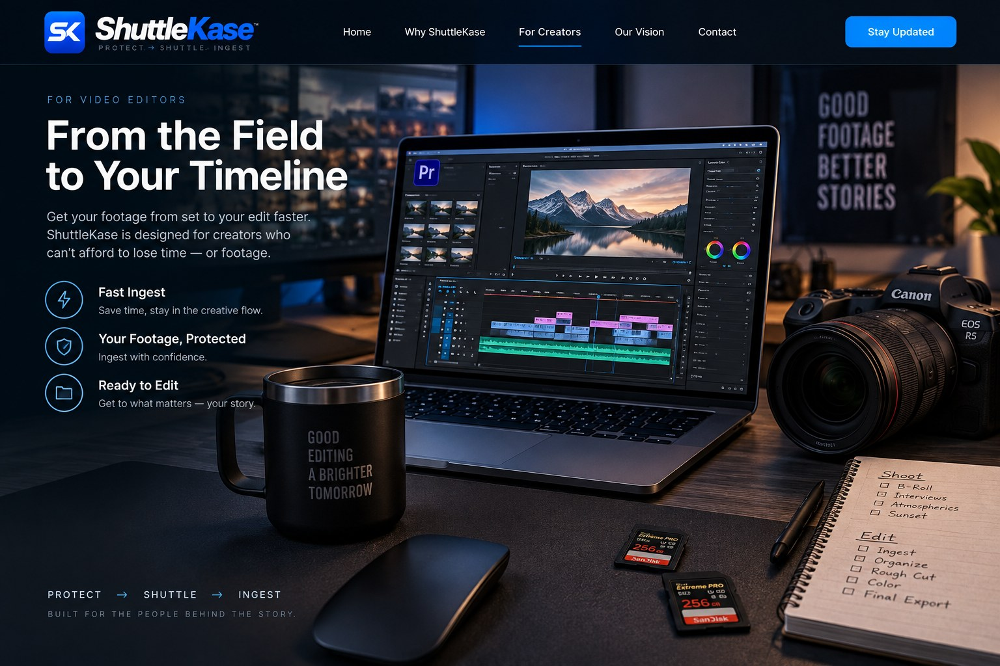
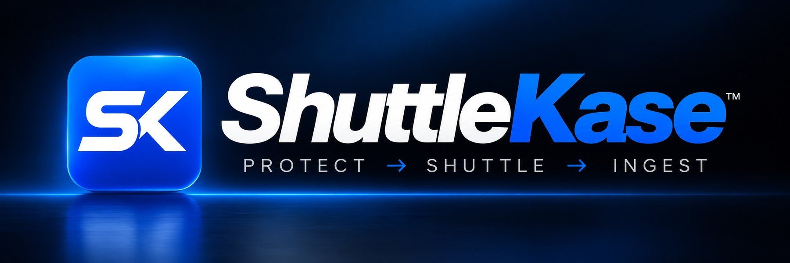
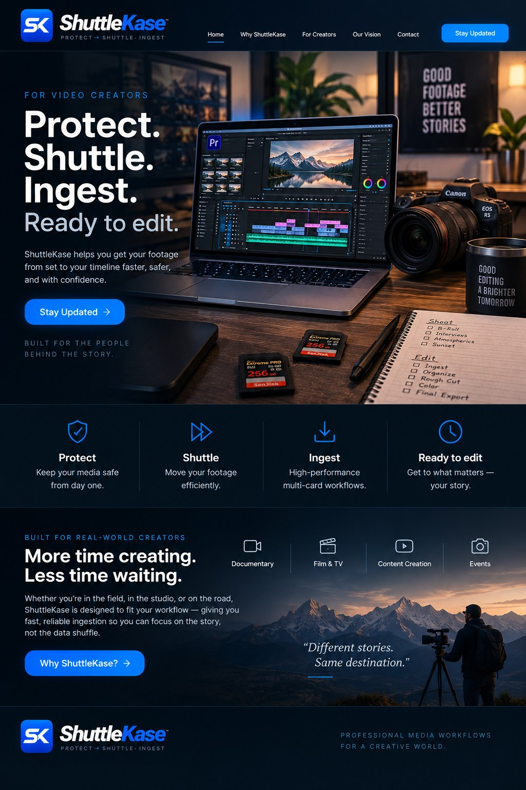

Protect
Keep media safe from the moment it leaves the camera.

For video creators
ShuttleKase helps move camera media from set to timeline faster, more reliably, and with confidence.
Keep media safe from the moment it leaves the camera.
Move footage efficiently through real production workflows.
High-performance multi-card workflows designed around working media.
Get to the story instead of waiting on the data shuffle.
Built around the workflow
Production teams depend on media moving quickly and predictably. ShuttleKase is focused on purpose-built professional hardware that streamlines the critical handoff from capture to post.

Built for real-world creators
Field-first workflows where reliability matters.
Fast movement of camera media into post.
Efficient ingest for compact teams and fast turnarounds.
Move captured media quickly when the clock is running.

In development
ShuttleKase is developing its next generation of professional media-ingest hardware. Product details will be announced as development progresses.
Get in touch
Colorado, USA